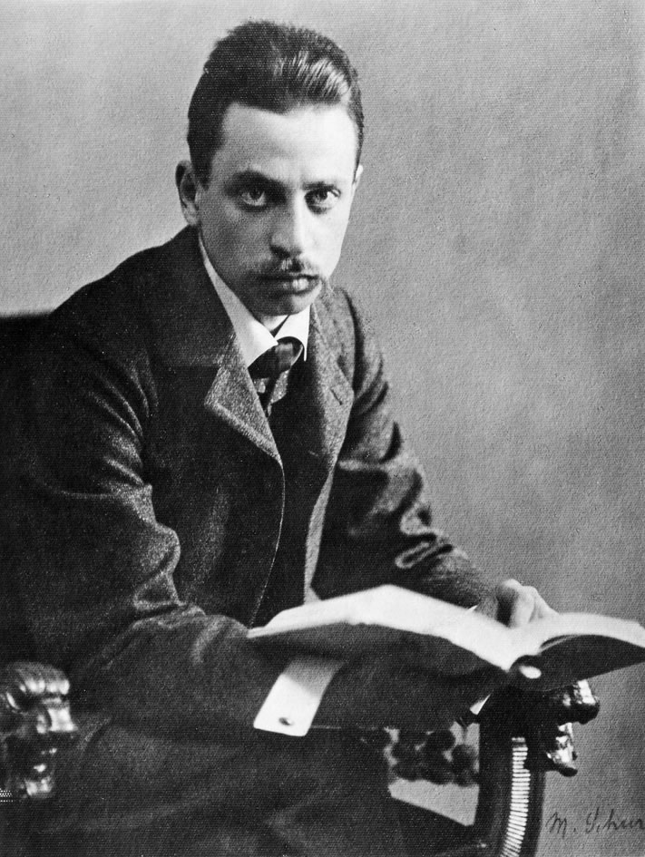

Rilke i Lou
Tylekroć sobie powtarzam, że jedynie dzięki Tobie wiąże mnie coś z tym wszystkim, co ludzkie, Tyś we mnie to zbudziła, jedynie dzięki Tobie przeczuwam to, oddycham tym, inaczej pozostałbym na uboczu spraw człowieka i stałbym się dla niego niezrozumiały.
— Rilke do Lou Andreas-Salomé, Ronda, dzień Trzech Króli 1913 roku

Młody, 21 letni poeta, stojący dopiero u progu kariery literackiej, spotyka w domu swego przyjaciela „sławną pisarkę”, której życie spowija na domiar aura swoistej legende scandaleuse. René Maria Rilke, syn skromnego urzędnika, niegdyś oficera austriackiej armii, i zawiedzionej w swych wybujałych ambicjach hipochondryczki, rozczarowanej małżeństwem, uznawanym za mezalians, porzucił rodzinną Pragę, by w Monachium szukać wolności, rozległych przestrzeni nieskrępowanego światopoglądu oraz pokrewnych sobie dusz, zbuntowanych przeciw mieszczańskiemu filisterstwu własnej rodziny. Już wówczas dał się poznać jako obiecujący autor kilku tomików poetyckich, przepełnionych nastrojową obrazowością, kipiących wprost nadmiarem egzaltowanych uczuć, blaskomiotnych epitetów oraz kunsztownych rymów i aliteracji. Ten oto początkujący poeta, noszący w sobie kiełkujące ziarno przyszłych dokonań artystycznych, spotyka na swej drodze Lou Andreas-Salomé — prawie o piętnaście lat starszą od siebie pisarkę o ugruntowanej renomie literackiej.
Lou, osoba wykształcona i znana w europejskich kręgach intelektualnych (jako jedna z pierwszych podjęła niedostępne dotąd dla kobiet studia uniwersyteckie) zasłynęła dzięki esejom, powieściom oraz książkom poświęconym Nietzschemu i Ibsenowi. Była też bohaterką głośnego skandalu, kiedy to odrzuciła starania Nietzschego o jej rękę, po czym — wzbudzając tym powszechną sensację — spędziła kilka miesięcy wspólnie z nim oraz Paulem Rée, tworząc swego rodzaju ménage à trois. Zrządzenie losu sprawiło, iż ta zamężna już kobieta, błyskotliwa intelektualistka i emancypantka, nie odrzuciła nowego, żarliwego wielbiciela i potrafiła dostrzec w głębi jego istoty tlący się płomyk przyszłego artyzmu — niezrównanego mistrza poetyckiego słowa, jednego z najznamienitszych liryków dwudziestego wieku.

Od pierwszych chwil znajomości połączyło ich gwałtowne uczucie szczerej miłości, nieposkromionej namiętności oraz głębokiego przywiązania, które po kilku latach przerodzi się w dozgonną przyjaźń, będącą dla obojga źródłem siły w zmaganiach z przeciwnościami losu. Lou staje się dla Rilkego powiernicą i opiekuńczym duchem, nauczycielką, wiodącą go po utartych szlakach i bezdrożach literatury; dzięki niej poeta poznaje luminarzy kultury europejskiej, gości w salonach Monachium, Berlina, Moskwy, St. Petersburga, Wiednia. Razem spędzają szczęśliwe tygodnie w Wolfratshausen w dolinie Izary, pośród radości lata i nieogarnionych krajobrazów. Każdego dnia o brzasku wyruszają na wspólne spacery po lesie, brodząc bosymi stopami po zroszonej trawie i odkrywając nieprzeparty urok owej prostoty życia.
Razem udają się dwukrotnie w podróż do Rosji — ojczyzny Lou, która dla Rilkego stanie się ojczyzną duchową — nieprzebranym źrodłem naznaczonych mistycyzmem idei, obrazów, błogodźwięków wypełniających karty jego Księgi godzin. I choć po trzech latach codziennego ze sobą obcowania, dzielenia wszelkich myśli i doznań oraz wspólnych studiów nad sztuką renesansu i literaturą rosyjską, żarliwość łączącego ich uczucia przygasa a myśl o nieuchronnym rozstaniu nurtuje coraz bardziej, to jednak ta niezwyczajna miłość nigdy nie zamiera, pozostawiając żegnającym się kochankom kojącą nadzieję, iż „jeśliby kiedykolwiek w przyszłości było Ci ciężko na duszy, znajdziesz u nas zawsze dom w tej najgorszej godzinie”.
Paryż, 23 czerwca roku 1903
Od tygodni pragnę Ci napisać te słowa i waham się, z lęku, czy to nie nazbyt wcześnie, lecz któż wie, czy będę mógł przybyć do Ciebie w cięższej jeszcze dla mnie godzinie.
Tym zdaniem Rilke przerywa po dwu z górą latach okres milczenia, jakie zapanowało od dnia rozstania z ukochaną. Jakże wiele zmian zaszło w życiu obojga od tamtego czasu! Utraciwszy jedyne oparcie, jakim była dlań obecność Lou, poeta, nie wiedząc, co począć, osiadł wśród mieszkańców kolonii artystycznej w Worspwede nieopodal Bremy. Znalazł tam nie tylko odpowiednią dla siebie atmosferę „przepełnioną wolą tworzenia” tudzież zrozumienie dla własnych ambicji artystycznych, lecz także przyjaźń i podziw ludzi, bez reszty, jak on, oddanych sztuce. Rilke poznaje w Worpswede dwie młode, utalentowane artystki, z których jedna, rzeźbiarka Clara Westhoff, zostaje jego żoną i matką jedynego dziecka — córki Ruth. Jednakże rodzinna idylla nie trwała długo. Poeta nie potrafił pogodzić — z czym zresztą będzie się zmagał przez całe życie, we wszystkich związkach z kobietami — dręczących go uczuć tęsknoty za bliskością drugiej osoby, ciepłem domowego ogniska, bezinteresownością miłości i oddania, słowem życia — z pracą artystyczną, której pragnął swe życie poświęcić. „Gdziekolwiek bowiem spojrzeć, dawna wrogość trwa między życiem a ogromem pracy” — napisze Rilke w Requiem pamięci przyjaciółki. Dlatego też myśl o rodzinnym szczęściu musiała ulec wobec pragnienia wolności, swobody tworzenia i absolutnej samotności, niezbędnej, by „w jakiejś bardzo osobnej godzinie” narodziło się „pierwsze słowo poezji”. Rilke zostawia żonę i córkę pod opieką swych teściów i wyrusza sam do Paryża, w nadziei, iż odnajdzie tam ową upragnioną samotność. Jednakże miasto, które stanie się dlań domem i głównym miejscem pobytu przez najbliższych dwanaście lat, okazuje się z początku okrutnym, przeszywającym i pogrążającym w przygnębieniu doświadczeniem. Poeta, nadwrażliwie wyczulony na wszelkie przejawy srogiego powszedniego życia, nie jest w stanie przejść obojętnie wobec nędzy, okropności i beznadziei losu udręczonych mieszkańców. Paryż jawi mu się miastem nędzarzy, kalek, żebraków; choroby i śmierci. „Nagle można odnieść wrażenie, że w tym rozległym mieście istnieją rzesze chorych, tłumy umierających, całe narody umarłych”.
W takiej to atmosferze, w owej „najgorszej godzinie” wyrywa się z jego serca wołanie do Lou. W jej życiu również wiele się zmieniło. Będąc mężatką (Friedricha Andreasa poślubiła w roku 1887), niezmiennie strzeże swego prawa do wolności i kształtowania życia wedle własnych przekonań; wiąże się z Friedrichem Pinelesem, podróżuje z nim po Europie, oddaje się studiom i twórczości literackiej. Jej uwagę przyciągają coraz bardziej prace z dziedziny psychoanalizy i działalność jej twórcy Sigmunda Freuda. Mimo to nie zapomniała o swym najdroższym przyjacielu, toteż odpowiada na jego list szczerym i ciepłym słowem: „zawsze znajdziesz u nas gościnę zarówno w ciężkich, jak i w dobrych godzinach”. To początek ciągnącej się nieprzerwanie aż do śmierci poety korespondencji, będącej wspaniałym świadectwem głębokiej przyjaźni, przywiązania i wzajemnego zaufania, jakie łączyło tych dwoje niepospolitych ludzi. W osobie Lou Rilke znajdzie powiernicę wszystkich swych myśli, doznań, wrażeń i uczuć, lęków i cierpień, utrapień i niepokojów. Nie będzie ich dzielić żadna tajemnica; ani jego nieudane małżeństwo, ani nowe miłosne przygody i zauroczenia, ani dolegliwości fizyczne, ani rozterki duchowe nie zdołają przerwać łączącej ich nici wzajemnego porozumienia i bezbrzeżnego oddania. Jak wyznała Lou: „Byliśmy małżonkami, zanim jeszcze staliśmy się przyjaciółmi, i zaprzyjaźniliśmy się nie z wyboru, ale na mocy jakichś wewnętrznych zaślubin. Nie szukały się w nas dwie połowy, zaskoczona jedność rozpoznawała siebie ze zdumieniem w drugiej, nieobjętej jedności. Byliśmy rodzeństwem, ale jak przed praczasem, zanim jeszcze kazirodztwo stało się grzechem”.
Monachium, 2 czerwca roku 1919
Od dnia nawiązania korespondencji w czerwcu roku 1903, listy wymieniane między poetą i Lou są niczym zwierciadło, w którym odbijają się losy nie tylko samych adresatów, lecz także przyjaciół, znajomych, możnych protektorów i wybitnych osobistości świata kultury i nauki; przeglądają się w nich dzieje epoki, rodzące się i zamierające prądy literackie, ludzkie dążenia i dramaty człowieczeństwa. Wiele miejsca na kartach tych listów zajmuje Rodin, którego dziełu Rilke poświęca monografię oraz cykl wykładów, wygłaszanych w Niemczech. Rodin jest dla poety przede wszystkim godnym naśladowania wzorem twórcy bezgranicznie oddanego swej sztuce, artysty cierpliwie i wytrwale przemieniającego twardą strukturę bezładnej materii w delikatną tkankę dzieła sztuki. Rilke będzie przez kilka miesięcy osobistym sekretarzem rzeźbiarza, dzięki czemu może nie tylko co dzień obcować z podziwianym przez siebie twórcą, lecz również kształtować własne mistrzostwo artystyczne. W listach Rilkego z tego okresu pojawiają się nazwiska najznamienitszych pisarzy i poetów dwudziestego wieku, z których większość poznał osobiście — wśród nich Hugo von Hofmannsthal, Paul Valéry, Anna de Noailles, Emile Verhaeren, Stefan Zweig, Marcel Proust. W owym czasie Rilke zaskarbia sobie szczere uczucia przyjaźni i oddania księżnej Marie von Thurn und Taxis-Hohenlohe, która będzie miała decydujący wpływ na dalsze życie poety. Księżna Marie roztoczy nad nim opiekę arystokratycznego mecenatu, będzie go gościć w swej posiadłości Lautschin w Czechach, w Palazzo Valmarana w Wenecji oraz na zamku Duino, którego imię nierozerwalnie zwiąże się z jego twórczością — tam bowiem Rilke rozpocznie swe słynne Elegie duinejskie. To ona w jednym ze swych listów nakreśli jakże trafną charakterystykę poety, nacechowaną wręcz matczyną troską o niego, a także wybornym poczuciem humoru:
O Dottore Serafico! Zazdroszczę Panu. Myślę sobie, że Pan jesteś najszczęśliwszym człowiekiem na tej boskiej ziemi.
(Teraz złości się Pan jak ta pluskwa — con rispetto parlando — ale to tak zawsze bywa, gdy te niezwykłe oczy Pańskie, co to wszystko tak niezwykle inaczej widzą, raz przecież spojrzą na siebie same). A zatem wyliczę to Panu: Jesteś Pan wielkim poetą i Pan dobrze o tym wiesz. Jesteś Pan zakochany (nie rezonować, Pan jest i był zawsze zakochany, w kim, kiedy i gdzie, to wszystko jedno). Posiadasz małe atelier w Paryżu — i jest właśnie marzec — cała ta przecudowna wiosna puka do Pańskich drzwi. — Proszę wejść! — Niechże Pan zawoła, Dottore Serafico!
Widzi Pan — jestem kobietą, a kobieta w moim wieku musi sobie za każdym razem, gdy się przegląda w lustrze, wyrywać jakiś siwy włos z głowy i zaraz potem powinna się powiesić na najbliższym stryczku — miałam tyle zmartwień i trosk w życiu… A jednak kwitnące drzewo owocowe, złoty promień słońca makes me wild with delight! Ale z drugiej strony, gdyby Pan nie był takim desperatem, prawdopodobnie nie pisałby Pan tak cudownie. A zatem niechże Pan już sobie będzie desperatem, wielkim desperatem, największym desperatem!
W swym bezgranicznym oddaniu dla Lou Rilke nie omieszka zwierzyć się przyjaciółce nawet ze swych przelotnych romansów i chwilowych uniesień miłosnych, jakby szukając u niej zrozumienia i usprawiedliwienia dla swego postępowania wobec darzących go sympatią kobiet. Jego życie uczuciowe naznaczy związek ze sławną pianistką Magdą von Hattingberg, którą będzie w listach nazywał swą Benvenutą; poeta nawiąże też zażyłą znajomość ze znamienitą aktorką Eleonorą Duse. W późniejszych latach, już w czasie wojny, zamieszka wspólnie z Loulou Albert-Lazard, którą zaznajomi zarówno z Lou, jak i swą żoną Clarą. Pod koniec życia, podczas pobytu w Szwajcarii, Rilke przeżyje ostatnie miłosne zauroczenie, które wzbudzi w nim malarka Baladyna Klossowska, Merline.
Dzięki Lou poeta dojrzewał wewnętrznie; „owo przeobrażające mnie do głębi doświadczenie… płynęło właśnie z tego czegoś niewysłowienie rzeczywistego, czym Tyś była dla mnie. Nigdym w swej niepewności tak nie wierzył w namacalność dziejącego się wokół mnie istnienia anim nie potrafił tak rozumieć tego, co miało nadejść”. Lou była dlań „przeciwieństwem wszelkiego zwątpienia”, poniekąd „dowodem”, iż wszystko wokół „istnieje naprawdę”. Świat utracił w jego oczach „mgławicowość”, poeta nauczył się prostoty, „że w końcu wszystko jest zwyczajne” i dojrzewał do tego, „by mówić o rzeczach prostych”. Z biegiem lat, wraz z publikowaniem kolejnych tomów poetyckich (Księga obrazów, Nowe wiersze, Nowych wierszy część wtóra) oraz utworów prozatorskich (Pieśń o miłości i śmierci korneta Krzysztofa Rilke, Pamiętniki Malte Lauridsa Brigge) rosła sława literacka Rilkego; mimo to poeta nigdy nie zatracił w sobie pragnienia rozmowy z Lou, która sama w sobie była dla niego niczym balsam kojący wszelkie rozterki duchowe. Lou w pełni to sobie uświadamiała, kiedy w okresach głębokiego kryzysu i niemoty twórczej poety z nieomal macierzyńską troską zachęcała go do przelewania na papier nurtujących go myśli.
W ciągu tych kilkunastu lat, jakie dzielą pierwszy pobyt Rilkego w Paryżu oraz zakończenie I wojny światowej, dwoje przyjaciół spotkało się kilkakroć, w Paryżu, Monachium, Getyndze. Rilke z niejaką dumą podejmował Lou w progach swego paryskiego mieszkania, wynajmowanego w Pałacu Biron, gdzie znaleźli schronienie również Cocteau i Rodin. Poeta gościł też w domu Lou położonym na stokach wzgórza Hainberg w Getyndze, dokąd przeprowadziła się wraz z mężem, gdy ten otrzymał katedrę języków orientalnych na tamtejszym uniwersytecie. Lou odwiedziła Rilkego nawet w trudnych latach wojny, która zastała go w Monachium, zmuszając nawykłego do wolności i podróży poetę do trwania w beznadziei i pogrążenia się w trwającym dziesięć z górą lat poetyckim milczeniu. Spędziwszy ponad dwa miesiące w Monachium, w czerwcu roku 1919 Lou wyjeżdża do Hohenried w gościnę do swej przyjaciółki. Przy pożegnaniu żadne z nich jeszcze nie przeczuwa, że to ich ostatnie w życiu spotkanie. Jakże prorocze jawią się słowa Lou z listu, skreślonego kilka dni później: „Kochany Rainerze, a więc stało się, nie zobaczę Cię więcej. Zawsze będę jednak myśleć o tym, że pozostanie mi szczęście trwałego związku z Tobą może gdzieś w innych sferach, nawet gdybyśmy nic o nich nie wiedzieli… Proszczaj Rainerze, kochany mój… Podarowałeś mi kawał życia, Ty sam nawet nie wiesz, jak gorąco je przeżywałam. Lou”.
Niedługo potem, 11 czerwca, poeta opuszcza Monachium, udając się do Szwajcarii na zaproszenie Towarzystwa Literackiego z Hottingen. Jakkolwiek zamierza powrócić za kilka miesięcy, granicy niemieckiej już nigdy nie przekroczy. Szwajcaria stanie się jego ostatnią w życiu ojczyzną z wyboru.

Château de Muzot, 11 lutego roku 1922
Pogrążywszy się w całkowitej samotności, którą wreszcie, po latach tułaczki, odnalazł w starej wieży zamkowej Muzot w kantonie Valais, w przeciągu kilkunastu dni Rilke ukończył dwa cykle poetyckie, uznawane za najznamienitsze w jego dorobku i zaliczane do najważniejszych dzieł literatury dwudziestego wieku — Elegie duinejskie oraz Sonety do Orfeusza. W owym „huraganie serca i umysłu” śle do przyjaciółki okrzyk radości i — zapewne dumy:
Lou, droga Lou, a więc w tej chwili… odkładam pióro po ostatniej skończonej Elegii, dziesiątej.
Tej samej, której początek napisałem już w Duino: Żebym kiedyś u granic strasznego przejrzenia / radość i chwałę zaśpiewał przyzwalającym aniołom… Pomyśl! Ile musiałem przejść, zanim doszedłem aż tutaj! Poprzez wszystko. Cud. Łaska… Teraz odnalazłem się na nowo. Dopóki nie było Elegii, czułem, jakbym miał serce okaleczone. One są. Istnieją…
Odpowiedź Lou godna jest prawdziwie kochającej kobiety, pełnej szczerego zrozumienia i niekłamanego podziwu dla dzieła poety:
Getynga, 16 lutego roku 1922
Ach, sława Bogu, drogi Rainerze, jakże On Ciebie obdarzył i jak Ty mnie! Siedziałam i czytałam, i ryczałam z radości.
To nie była tylko radość, lecz coś jeszcze potężniejszego, jakby się nagle rozwiała, rozdarła zasłona i naraz wszystko stało się ciche, pewne, istniejące i dobre. To nie do wysłowienia wspaniałe, wypowiedzieć, powołać do istnienia Niewyrażalne. I to jest właśnie najważniejsze, przecież my, otoczeni i osaczeni przez całą tę zewnętrzną naoczność, tylko w ten sposób możemy się w imię naszej prawdziwej egzystencji od niej wyzwolić, mimo iż w niej sami żyjemy. Gdzież można to osiągnąć, jeśli nie w poezji?
Sanatorium Valmont, 13 grudnia roku 1926
Przygwożdżony do łoża śmierci, Rilke kreśli ołówkiem swój ostatni list do ukochanej przyjaciółki:
Dorogaja, widzisz, więc stało się to, do czego mnie moja czujna natura od trzech lat już przygotowywała i przed czym mnie ostrzegała, a teraz tak mi ciężko, tak bardzo ciężko to przetrwać… A teraz, Lou, nie wiem sam, ile piekieł! Ty wiesz dobrze, jak umiałem podporządkować ból, fizyczny ból, sprawom prawdziwie wielkim… A dziś. Dziś mnie całego przygniata. Rozłupuje. Dniem i nocą! Skąd czerpać odwagę?…
Poeta przeczuwa zbliżający się kres, pośród otępiającego bólu i cierpienia tudzież pragnienia, by nieuchronna śmierć stała się jego własną, jak w wierszu spisanym kilkanaście lat wcześniej:
Każdemu daj śmierć jego własną, Panie,
daj umieranie, co wynika z życia,
gdzie miał swą miłość, cel i biedowanie.
Dotknęła go nieuleczalna białaczka, która wyniszczała jego wątły organizm już od kilku lat. Rilke coraz bardziej podupada na siłach, męczy go nawet słuchanie czytającej mu przyjaciółki, powiernicy z ostatnich lat spędzonych w Szwajcarii, Nanny Wunderly-Volkart; zdobywa się jedynie na wysiłek, by skreślić ostatnich kilka słów do przyjaciół. Umiera 29 grudnia roku 1926; wraz z nim odchodzi bezpowrotnie w przeszłość owa epoka w dziejach kultury europejskiej, którą Stefan Zweig nazwie „światem wczorajszym”.
A Lou? Od dawna trwożnie nasłuchując wieści z dalekiej Szwajcarii, nie potrafiła znaleźć dla cierpiącego przyjaciela słów niosących pocieszenie. Nie będzie też mogła towarzyszyć mu w jego ostatniej drodze na cmentarz położony przy kościółku w Raron ponad doliną Rodanu, gdzie pochowano poetę zgodnie z jego ostatnią wolą. W ów mroźny, pełen słońca dzień zgromadzili się jedynie nieliczni spośród jego najbliższych przyjaciół; na grobie złożono wieniec laurowy od księżnej Marie von Thurn und Taxis, wraz ze słowami „niezrównanemu poecie, drogiemu i wiernemu przyjacielowi”. Jakby w zapamiętaniu Lou pogrąża się po śmierci Rilkego w pracy nad książką poświęconą jego pamięci, będącą nie tylko wyrazem jej hołdu i podziwu dla uwielbianego człowieka, lecz zarazem oddającą należną cześć znamienitemu artyście i jego niezwykłemu dziełu. Do niezatartych wspomnień o Rilkem powróci także na kartach swej książki o charakterze autobiograficznym, zatytułowanej Spojrzenie wstecz na życie, poświęcając zmarłemu przyjacielowi rozdział Z Rainerem. Lou Andreas-Salomé zmarła w swym domu w Getyndze 5 lutego roku 1937. Choć życzyła sobie, by jej prochy rozsypano w otaczającym dom ogrodzie, urnę złożono w grobie jej męża na getyńskim cmentarzu. Czyż to nie ironia losu, okrutna acz kryjąca jakąś tajemną sprawiedliwość, iż na tablicy nagrobnej widnieje do dziś li tylko nazwisko Friedricha Andreasa? Jak gdyby Lou nie było przy boku męża. Jej serce umarło już dawno, umarło — z Rainerem.
Dariusz Guzik
W artykule wykorzystano fragmenty korespondencji Rilkego i Lou w przekł. W. Markowskiej oraz utworów poety w przekł. M. Jastruna, A. Pomorskiego i W. Hulewicza.